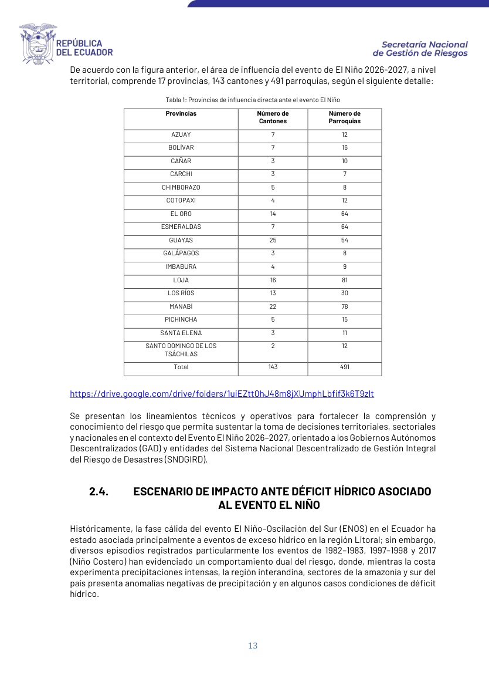

Gráficos metodológicos

Metodología de seis pasos.

Intersección espacial.

Tabla de provincias/cantones/parroquias.
Los documentos oficiales son públicos; matrices internas o datos sensibles deben gestionarse con permisos.
Documento normativo que institucionaliza lineamientos y responsabilidades.
Abrir/descargarDocumento rector para planes, ejes, acciones y seguimiento.
Abrir/descargarMetodología para análisis espacial, exposición, vulnerabilidad e impacto.
Abrir/descargarProvincias, cantones y parroquias bajo cota 1.500 msnm.
Abrir/descargarManual didáctico y procedimental para técnicos e instituciones.
Abrir/descargarMatriz de trabajo para planes, acciones, brechas y seguimiento.
Abrir/descargarControl de rutas institucionales, accesos, cartografía y trazabilidad.
Abrir/descargarSocialización de insumos técnicos oficiales para implementación territorial.
Abrir/descargarEstructura oficial referencial cantonal/provincial.
Abrir/descargarMatriz oficial de actividades, productos, avance y seguimiento territorial.
Abrir/descargarRepositorio Drive con las presentaciones oficiales por nivel territorial. Se usa porque los PPTX superan el límite de carga directa de GitHub web.
Abrir carpeta DrivePresentación oficial general para socialización. Se abre desde Drive por tamaño del archivo.
Abrir carpeta DrivePresentación oficial para GAD cantonales. Se abre desde Drive por tamaño del archivo.
Abrir carpeta DrivePresentación oficial para GAD provinciales. Se abre desde Drive por tamaño del archivo.
Abrir carpeta DrivePresentación oficial para GAD parroquiales. Se abre desde Drive por tamaño del archivo.
Abrir carpeta DriveMetodología de seis pasos.
Intersección espacial.

Tabla de provincias/cantones/parroquias.